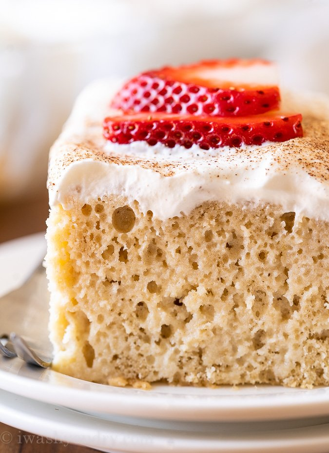
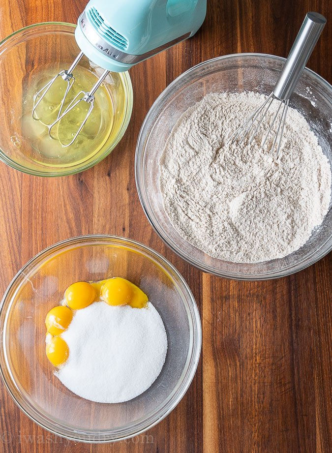

Tres Leches

Description
Soft, moist, and soaked in three kinds of milk, this authentic Tres Leches Cake is going to melt in your mouth. Sweet and refreshing, this crowd-pleasing cake is perfect for any occasion. It’s easy to make and is perfect for making ahead as it’s even tastier the next day.
Sweet, indulgent, and satisfying, this tres leches cake is full of so much flavor that everyone will be reaching for seconds. This soft, tender cake rivals the slice you get from your favorite Mexican restaurant or bakery, and you’ll be shocked to find out just how easy it is to make at home.
Ingredients
Here’s a basic list of the ingredients you’ll need in order to make this recipe.
- All Purpose Flour
- Baking Powder
- Cinnamon
- Eggs
- Sugar
- Whole Milk
- Vanilla Extract
- Heavy Whipping Cream
- Sweetened Condensed Milk
- Evaporated Milk
- Powedered Sugar
- Strawberries
Steps To Prepare

How to Prepare Tres Leches Cake
- For the cake: Preheat the oven to 350 degrees. Grease and flour a 9- by 13-inch cake pan.
- Sift the flour, baking powder and salt into a large bowl.
- Separate the eggs. Beat the egg yolks with 3/4 cup of the sugar on high speed until the yolks are pale yellow. Stir in the milk and vanilla. Pour the egg yolk mixture over the flour mixture and stir very gently until combined.
- Beat the egg whites on high speed until soft peaks form. With the mixer on, pour in the remaining 1/4 cup sugar and beat until the egg whites are stiff but not dry. Fold the egg white mixture into the batter very gently until just combined. Spoon into the prepared pan and spread to even out the surface.
- Bake until the cake is done, 35 to 40 minutes. Allow to cool in the pan, and then turn out (upside down) onto a rimmed platter.
- For the tres leches: Combine the heavy cream, evaporated milk and condensed milk in a small pitcher. Pierce the surface of the cake with a fork several times. Drizzle the milk mixture over the top and allow the cake to sit and absorb the milk mixture. Don't worry about totally soaking the cake! That's what you want.
- For the icing: Whip the cream with the sugar. Spread it evenly over the top and sides of the soaked cake and decorate with maraschino cherries.
- Refrigerate until ready to serve. Several hours is fine. The cooler the cake, the better!